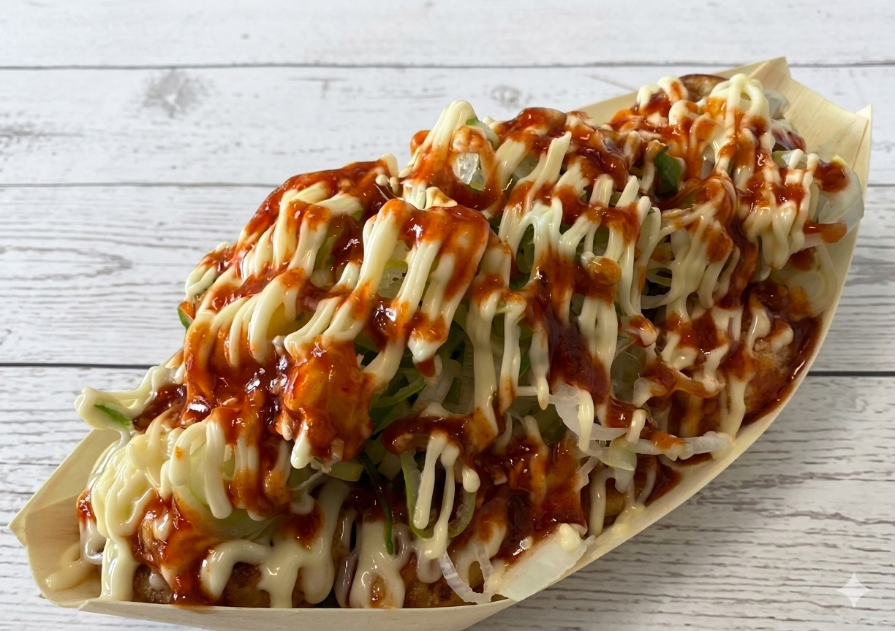
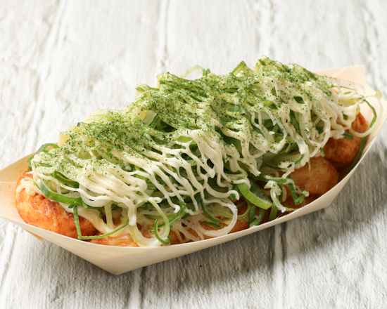

大阪の熱気そのまま、はげたこ野田店のメニュー
人気メニュー

© Google投稿者: 本場大阪たこ焼き はげたこ 野田店先ずコレ!!セット
はげたこ野田店にお越しいただいたら、まずはこちらから。お店の味をひとめぐりできる、最初の一皿におすすめのセットです。
 © Google投稿者: 本場大阪たこ焼き はげたこ 野田店
© Google投稿者: 本場大阪たこ焼き はげたこ 野田店
理想のたこ焼き
出汁をしっかり効かせたふわとろ生地に、こだわりのトッピングを重ねた一品。関東ではなかなか出会えない、本場大阪の味をそのままお届けします。
 © Google投稿者: masatake nishimura
© Google投稿者: masatake nishimura
旨辛どろソースマヨ
とろりと絡むソースとマヨに、ピリッとした辛さをプラス。一度食べればクセになる、はげたこ野田店ならではの旨辛テイストです。
豊富なトッピング
はげたこ野田店のたこ焼きは、出汁の効いた生地そのものの美味しさが自慢。タレなしでもしっかり味わえる仕上がりです。さらにトッピングは種類豊富にご用意しており、どれを選ぶか迷ってしまうほど。お好みに合わせて、いろいろな組み合わせをお楽しみください。
ギャラリー



ご注文について
たこ焼きの焼き上がりには15〜20分ほどお時間をいただいております。お待ち時間を少なくするため、お電話でのご予約をおすすめしております。焼き上がりまでの間は、無料の卵スープをご用意してお待ちいただいております。